01 · Coffee shop
Fix work by voice, even over coffee
A quick check between chats with friends, then back to the day.
Watch on YouTube ↗Process GPT LiteMeet the AI work assistant →
An AI work assistant that starts with a single message — the Process GPT engine, ready for individuals and teams to use today
Wondering what happened to Yu Aejin after the ad?
A cup of coffee, a round of golf, a workshop with colleagues. Watch four episodes that work through everyday work problems.
A quick check between chats with friends, then back to the day.
Watch on YouTube ↗Beyond the speed of single tasks: a flow that carries work through to the end.
Watch on YouTube ↗Split the roles, and connect what is done together with what is done in order.
Watch on YouTube ↗From a work problem to training, change management and building the AI system.
Watch on YouTube ↗Yu Aejin is a virtual character made with AI. The episodes are dramatized and paired with product demos. The barbecue episode introduces the enterprise Process GPT, and the consultation episode introduces the ‘Our Company AI Classroom’ service.
From a chat to your team’s workflow
Process GPT Lite is a chat-first AI work assistant. Talk to it and it keeps the conversation in context, creating documents and apps as it goes. Hand repeat work to skills and scheduled missions. When a decision is needed, an action card lands on the Home screen of the person responsible.
It’s simple to use, and under the hood it runs the Process GPT engine itself: the agent runtime, process engine, IeumOffice and MCP hub. Processes you create in chat are saved as Process GPT BPMN processes, so when your organization grows, they carry straight over to Process GPT.
No special training or modeling: work with AI the way you already work.
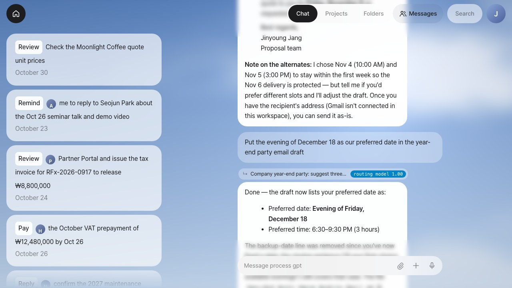
No need to pick a project or open a new conversation. Type into one box and the context router works out which conversation the message belongs to and routes it there, or opens a new one for a new topic.
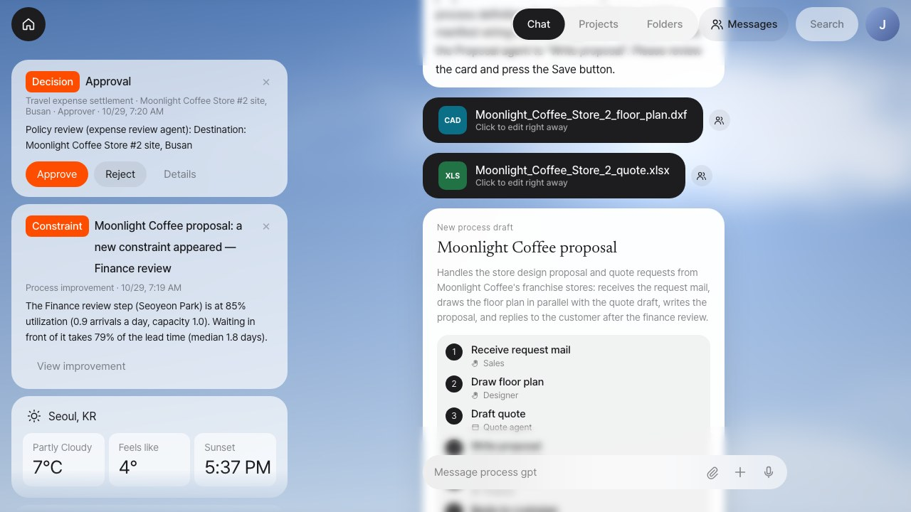
Home shows what needs your attention right now, as cards. Steps that need human judgment, such as approvals, reviews and replies, go only to the person who holds that role, and the button on the card handles it in one click.
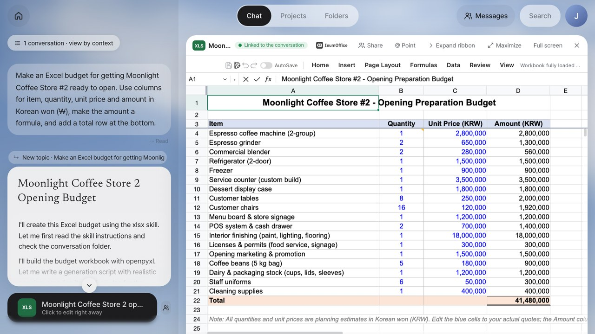
Word, Excel, PowerPoint and HWPX (the Korean Hangul word-processor format) documents an agent creates open right in the IeumOffice editor, with no download. Save your edits and the chat’s document card switches to the edited copy.
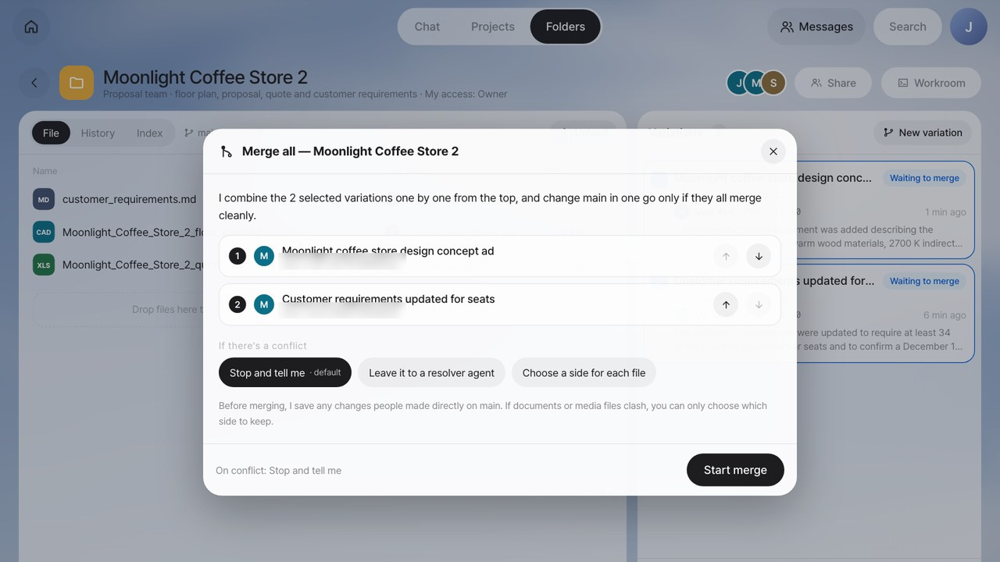
Your team shares files like a drive. Agents never touch the baseline directly; they work in variations (branches), and people review the differences and merge only the variations they choose, in one go.
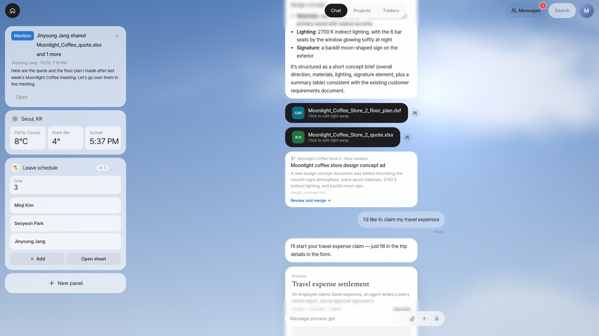
"Make a panel to track team leave days" is all it takes to put a work app with an input form and a summary on Home. The data lives in a spreadsheet in a shared folder, so the sheet and the panel always work on the same source.
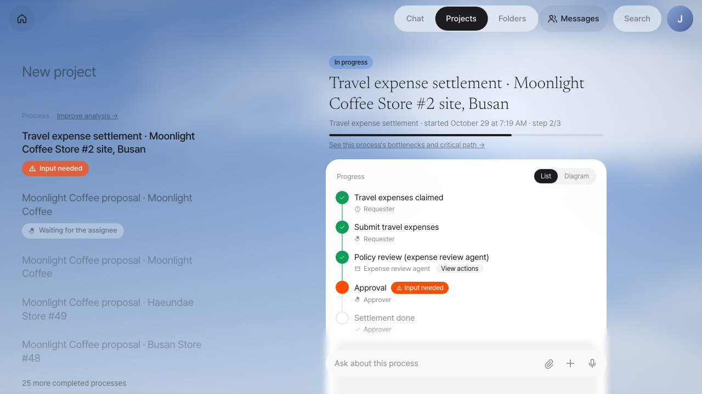
Lite isn’t a separate engine. The agent runtime, process engine, IeumOffice and MCP hub all run on the Process GPT engine, and processes you create in chat are saved as Process GPT BPMN processes.
Start small, see results right away, and keep the way you work as an asset of the organization.
Every screenshot comes from the working product, and every topic has a video.
01 · Chat and Home
Conversations keep their context, and Home shows what needs your action first.
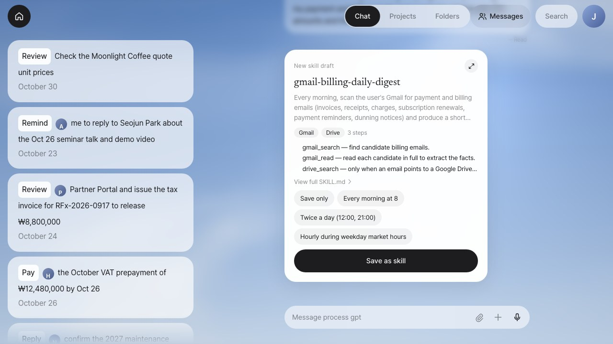
02 · Work automation
One person’s repeat work becomes skills and scheduled missions; work shared by several people and agents becomes a process.
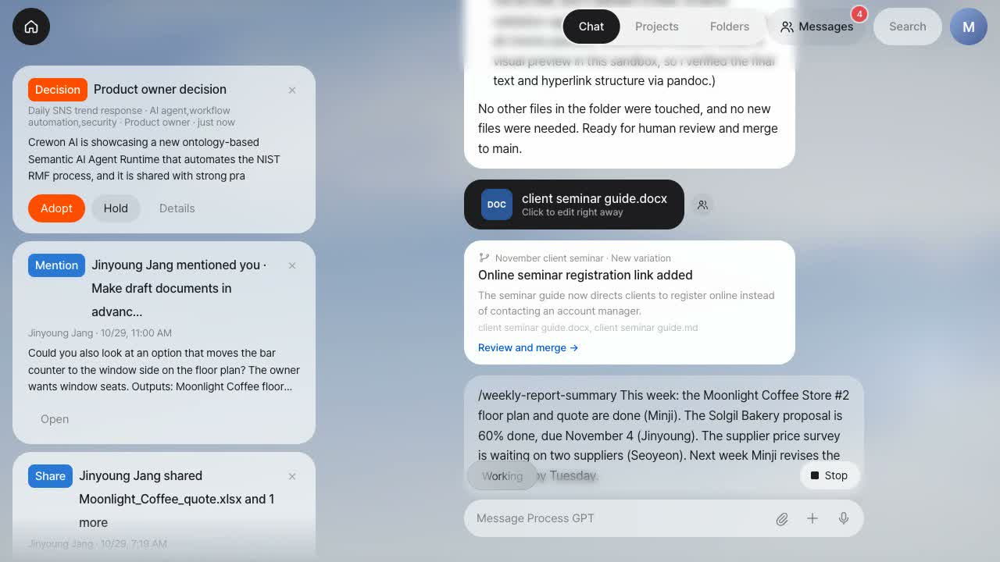
03 · Real-world scenario
Every day it scans social media, escalates only the issues worth bringing into your product, and carries them from the decision through implementation to marketing drafts.
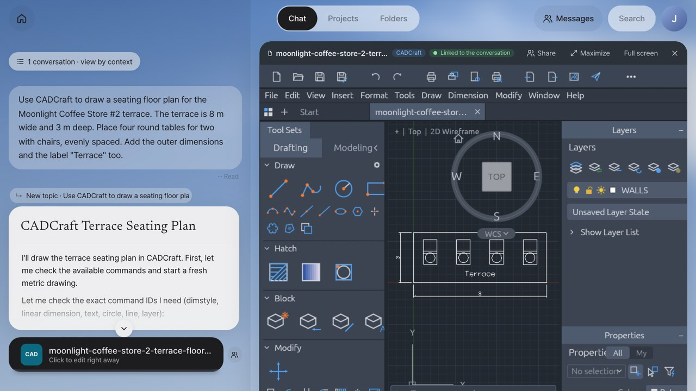
04 · Documents and creative apps
Not just documents but drawings, vector art, layered images, audio and video: agents create them through MCP, and people fix them in web apps right away.
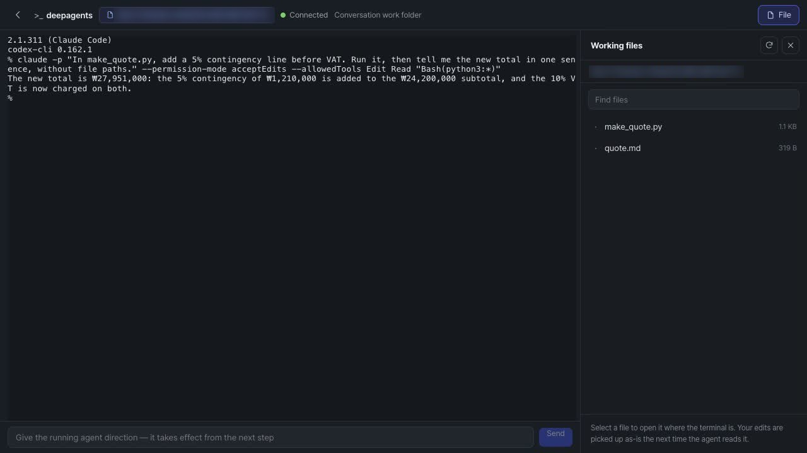
05 · Agent Workroom
You don’t just receive results. Open the agent’s working folder, inspect its outputs, edit them yourself, and steer an agent that is still running.
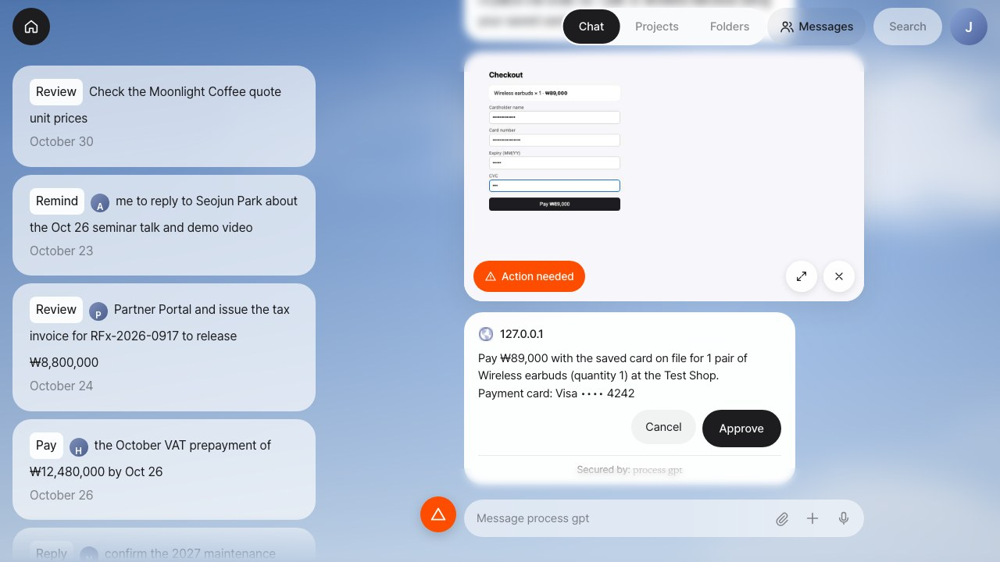
06 · Security
When a browser agent has to enter a login, payment details or a verification code, it pauses, and the system collects the value from the user and handles it on the agent’s behalf.
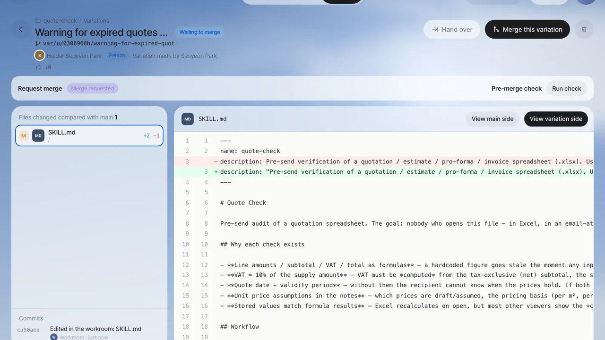
07 · Team collaboration
People and agents work in the same file space, and well-built skills are reviewed, then used by the whole team.
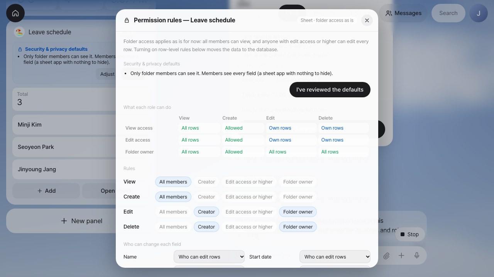
08 · Panel apps
No more waiting on development every time you need a small work app. It safely handles work where quantities go up and down, and data that many people share.
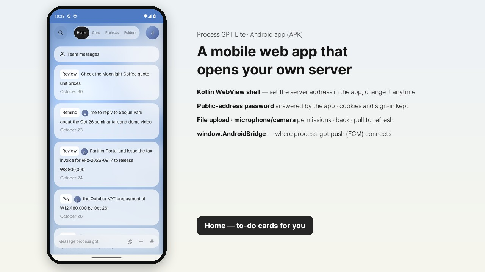
09 · Anywhere
Keep working outside the office, on the same screens.

10 · Agentic BPM (PoC)
Before an assistant or agent does something with lasting effects, such as sending email, making a payment, purchasing or launching, company policy classifies it as auto-run, run and record, approve first, or block, and logs the decision in the decision ledger. The decision is made by rules alone; the AI model never decides whether something is approved.
A 1–3 minute demo for each feature. Click a thumbnail to play it.
An 8-minute tour: one assistant that works across apps (one email → floor plan, proposal and quote), Claude Code and Codex, folders and team sharing, and processes that grow out of process mining.
One email from Moonlight Coffee is enough to draft a CAD floor plan, an HWPX proposal and an Excel quote. Point at the drawing to match its colors in PhotoCraft; the assistant checks that every table, wall and label made it through, then puts the drawing back into the proposal.
Share outputs with teammates instantly; they pick up from their own copy or with "Continue working". Plus @mention suggestions and team messaging.
Pick one conversation from the automatically split list, follow just that one, keep asking, and open the outputs each conversation has collected.
As email → floor plan, proposal and quote → share and reply keeps repeating, it finds the flow and recommends it. Once registered, the process runs on its own from the next email, and finance reviews the outputs straight in IeumOffice and CADCraft.
From past mail (body and attachments) and chat handovers, Lite draws work, next work, learned conditions, events and roles in Ontological DB. The weekly site report sent every Monday morning becomes a “Mondays 9:00” timer event found in the mail.
A process promoted to “Automatic” runs a “quote again only” mail from writing the quote. The work agent makes the quote on the company's form, and the finance review reaches Park Seoyeon's Home with the agent's draft already filled in.
A path no longer used is retired with the numbers behind it, and the finance review is pinned from the 1st of next month. Each decision stays in the decision ledger and in the Ontological history.
Three salespeople asked for the company seal in their own words; it gathers into one sales routine step. The shared ways are compared by the time they took, and the fastest becomes that work's skill.
For each process the company chooses Watch, Suggest or Automatic. At Suggest, a request by mail or chat is asked about before it starts. Recurring work a mail asks for becomes a schedule, and a company timer follows the process's stage when it rings.
From sign-in to Home, chat and running a process: a day’s work in one take.
Routing model → logprob → JSON: how each message finds the conversation it continues.
Long-press or right-click to rate, copy, select text or reply.
Learns what you always ask for after a result, and offers it first: "Like last time: shall I…?"
Save a process built in chat as BPMN and run it, browser mission step included.
Connect Google, YouTube and more, and run skills on a schedule. Also shows Claude Code runs and the mobile screens.
A process that runs from benchmarking to a Claude Code product improvement to marketing drafts.
Internal mail goes out automatically, external mail is logged and can be recalled, personal data needs the owner’s approval, and bulk exports are blocked.
Before the approver looks, it prepares the options, extra approvals, remaining lead time and a draft purchase order.
Replans a launch blocked by policy as alternatives and ranks them by the strategy map’s priorities.
Reviews 30 days of the decision ledger and applies the proposed relaxations, tightenings and alternative paths.
Inspect outputs, drop in code, and steer Claude Code.
Collects the passwords and cards an agent needs on your behalf and keeps them under envelope encryption.
The working browser's live screen floats in a circle beside the composer. Tap it and it grows into a card in the middle showing what it is doing.
A verification code emailed during login is found in the mailbox and entered right away. The card asking for it stays, and whichever arrives first is used.
The mobile app that connects to your own server address.
One mail prepares a PSpice circuit review, a STEP and IGES 3D model, a 2D drawing, and draft proposal and quote. The values are measured by the tools.
An example connected to an event-sourced ERP. Upload a file and it asks, accept and it works over MCP, say cancel and the server compensates. Korean UI and narration. Not yet in the public install.
Ask about next year by the quarter, revenue, and what changes if orders, price or lead time change. The same models as the ERP screens work out the numbers. Korean UI and narration. Not yet in the public install.
Agents draw through MCP; people edit right away in web CADCraft.
Refine an agent’s vector artwork in web VectorCraft.
Edit images with live layers in web PhotoCraft.
Fix agent-made audio in web SoundCraft.
Keep editing an agent’s video cut in web FilmCraft.
Edits you ask for in chat appear in the open app instantly; bring up the input box with the dial.
Give it a job and related conversation contexts attach as chips. For a teammate's context, Request and the Home card get permission, and it answers again. If the request was already made, you see that answer instead of calling the agent.
Set roles on the folder and run Claude Code as the team session. The team settles the answers to the requirements questions sent to the PO in a mob meeting. The agreed answers are filled in on the decision page, and the architect requests a change to the domain design before approving it.
The bolt plan is settled in a mob construction meeting. The developer then gets permission cards, answers them in the shared shell and gives a direction while the code is being written. The direction shows up in the code plan and in the app that was built, and QA approves build and test.
Link an AI-DLC repository as a shared folder and see the status, human wait, bolt board and quality panels on Home. While AI-DLC takes the answers and waits for approval, the panels refresh on their own.
For each question, team members each pick an answer, and you see the others' choices only after you pick. When the answers match, the card is agreed; when they split, the decider looks at the reasons and evidence, settles it, and sends all the answers at once.
Review findings in an approval are judged together by the team too. Open the section of the source document a finding points to. What to fix and what to accept go to the session as one decision.
When a code plan approval comes in, the developer opens the plan document itself, reads it, and approves. The team lead sees intent → units → bolts on the bolt board. Click a running unit to open the Claude Code screen building it; bolts that came back from testing show there too.
When the team lead writes a bug in a chat, a plan card arrives with the scope, the units it would touch and the reasons for that reading. Click "Start now" and answer whether you trust the folder: the team session starts with that scope and the bolt takes its place in the bolt line.
A feature the PO takes in is split into one bolt per unit and queued at the end of the line. A bolt that waits on another cannot move alone, so they move together. QA stops the session at once for a security reason, and when the team lead reads the reason and discards it, the head of the line is free.
See a summary of what teammates do with AI, as far as they share, and decide who sees how much of each context with a preview.
When a topic such as pay appears, policy has the owner decide even a same-team request for the full text, and every permission to reference is kept in the decision ledger with its title hidden.
The helper listens in and brings up quotes, floor plans and progress; requests become agent tasks, and the minutes land in the room automatically.
Agents work in variations; people pick variations and merge them all at once.
Share your skill company-wide, then review and verify colleagues’ improvements before merging them.
Build work apps such as leave or lead tracking by asking, with the data kept in a spreadsheet.
A leave app that appends records and recalculates balances, plus privacy protection applied from the moment an app is created.
An app-specific database and RLS enforce "who can edit what".
Both products run on the same engine. Process GPT connects people, AI and existing systems in end-to-end processes to cut lead time across the whole organization; Process GPT Lite puts that engine behind a single chat as a work assistant for individuals and teams. Start small with Lite, and move to Process GPT when work starts crossing departments.
| Category | Process GPT Lite | Process GPT |
|---|---|---|
| Product type | AI work assistant — a chat-first work tool for individuals and teams | Agentic BPM platform — runs end-to-end processes across the organization |
| Primary users | Individuals, small teams and business users at small and mid-sized companies | The whole organization: business users, process owners and IT |
| How you start | Straight from chat — conversations, skills and scheduled missions, no modeling | Process definitions and BPMN modeling, or reverse-engineering policy documents |
| Unit of work | Conversations, skills, scheduled missions and panel apps — processes when you need them | End-to-end processes and instances |
| Main screens | Chat · Home panels · Shared folders · Panel apps · Android app | Process modeler, work lists and instances, analytics and observability |
| Control and governance | Folder member permissions, notifications to role owners, skill review and merge, row-level security | Organization-wide governance, DMN rules, solidifying the execution path, lead time analysis |
| Integrations | Google · Slack · GitHub · Notion · YouTube connectors and MCP | MCP hub, A2A, integration with internal enterprise systems |
| Deployment | Lightweight rollout — use it in a web browser and the Android app | Enterprise deployment on-premises or on Kubernetes |
| Engine | Process GPT engine (agent runtime · process engine · IeumOffice · MCP hub) | Same |
| Growth path | Processes built in Lite are Process GPT BPMN processes — keep using them as they are | Scales team-level work into organization-wide processes |
INSTALL
Install it with three commands on any machine that runs Docker. The database, sign-in, AI agents and the document editor all start together, and each new release comes with its own command for upgrading.
Download the installation script pinned to release v0.2.0, verify its SHA-256 checksum, then run it. Do not run it if the checksum does not match. The installer asks for your LLM endpoint, API key and model name, plus the first admin’s email. You can also clone the repository and run it yourself:
git clone https://github.com/uengine-oss/process-gpt-lite.git && cd process-gpt-lite/install && ./install.sh
Have Docker Desktop (or Docker Engine) and an API key for an OpenAI-compatible LLM ready.
Run the command above. The first run builds the images in 20–40 minutes; after that, it starts in 1–2 minutes.
Open http://localhost:18080, enter the admin email, then type the 6-digit code from the mailbox at http://localhost:18025.
| Item | Minimum | Recommended |
|---|---|---|
| Docker | Docker Desktop 4.x or Docker Engine 24+ (Compose v2) | - |
| Memory allocated to Docker | 6GB (about 1.5GB in use while running) | 8GB or more (first build) |
| CPU | 4 cores | 8 cores |
| Disk | 20GB (images take about 11GB) | 30GB |
| LLM | OpenAI-compatible API endpoint, key and model name (OpenAI, an in-house LLM, vLLM and others) | |
| Profile | Included services | What you can do |
|---|---|---|
| lite (default) | Web app and server, Supabase (PostgreSQL, auth, API, storage), mailbox, Deep Agents + sandbox, document generation (office-mcp), IeumOffice editor | Delegate work in chat, agent tasks, document creation and editing, shared folders, panel apps, Vault, browser agent |
| full (preview) | lite + process engine (completion · polling) + MCP hub | Start and run BPM processes, manage MCP servers |
./install.sh --profile full.
.env..env is created at install time (mode 0600), with secret keys generated automatically. Upgrades leave it as it is.
.env: set PUBLIC_URL to this machine’s address and LITE_BIND=0.0.0.0, configure SMTP, then run ./install.sh again.| Symptoms | Fix |
|---|---|
| Port 18080 is taken by another program | ./install.sh --port 28080 |
| The sign-in code doesn’t arrive | Check the mailbox at http://localhost:18025; see docker compose logs auth |
| Chat doesn’t answer | Check the LLM endpoint, key and model in .env, run ./install.sh, and see docker compose logs deepagents |
| Agent tasks hang | On Linux, add your user to the docker group; check that docker ps lists deepagent-sandbox-* |
| The first build fails for lack of memory | Give Docker 8GB of memory or more and run it again |
| Windows | We recommend installing Docker Engine inside WSL2 |
Learn with your own company’s work, then use it right at your company. Bring one real task, practice it in Process GPT Lite, and the initial installation in your agreed company environment is included in the training.
STEP 1 · Training
First chat and context → IeumOffice HWPX and Excel → Craft apps → co-editing → panel apps → shared folders → skills and scheduled missions → drafts from email → process mining → Agent Workroom → a capstone on your own work.
STEP 2 · Deployment
Installed with Docker Compose on one agreed server, with initial setup such as the admin account and a connection to the LLM your company uses. The skills and apps made in practice move over as they are. LLM and server costs and custom integrations are separate and explained up front.
STEP 3 · Adoption
Consultants support diagnosis, process innovation, training and change management online, monthly and on demand, tailored to staff, teams and executives. Three plans from ₩2M to ₩10M a month (VAT excluded, negotiable).
The transformation program: diagnosis → bottlenecks → agents and automation → process innovation → training → change management See the program →
Start with a single message
Hand today’s work to AI with Process GPT Lite, then grow it into your team’s workflow.
Talk to us about adoption, or ask for a demo.
Have more questions?
If you would like to learn more about Process GPT Lite or have any questions, please contact us anytime.